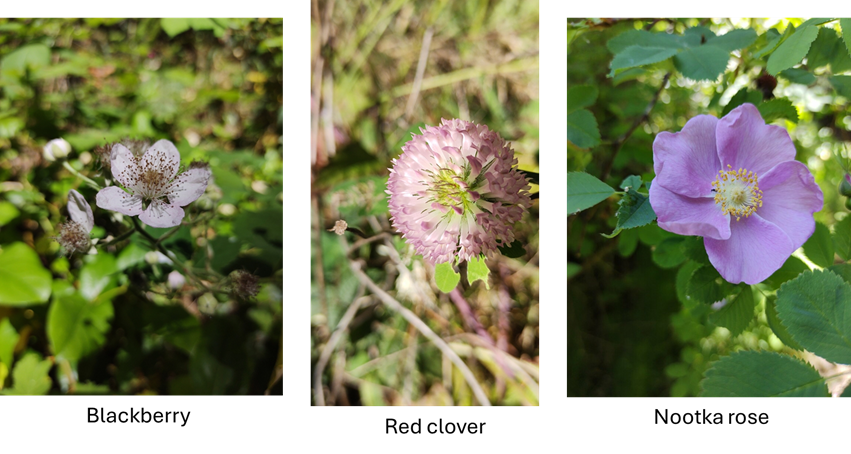

BC Bee-Plant Database
Reading time: 5 minutes
Bees and Flowers of BC
iNaturalist (iNat) is a great resource for data relating to bees and the flowers they are feeding on, and this dataset just keeps on growing! When you submit a picture of a bee, iNat typically returns its best guess at the identity of the bee, but not that of the flower it is visiting. To capture the missing plant association data, we developed a method that identifies the plants in iNat bee pics, and were then able to create a BC BeePlant Database of over 10,000 records. To do this, we used:
iNaturalist
We used iNat (www.inaturalist.com) to source ~ 25,000 “research grade” BC bee images, and collect plant association data where available.
Teaswamp’s “BeeNuker3000” in combination with
We used BeeNuker3000 to remove the bee from the pic enabling plant identification with PlantNet (https://my.plantnet.org)
Here’s what we found
Where bees have been photographed and the range of plants they feed on
There are over 600 native bee species in BC, of which 132 have been identified to research grade in iNat. Our BeePlant Database currently has plant association data for 88 of BC’s native bees, and info on where and when these bees were spotted.
Bee families in the Database
Some bee species are easier to photograph and identify than others. Most of the bees in the BeePlant Database are in the Apidae family (bumblebees, honeybees, and stingless bees), with honey bees (Apis mellifera) and bumblebees (Bombus) accounting for around 8,800 records. This reflects the popularity of photographing larger bees, and the difficulty identifying smaller bees from photographs.
Bumblebees come out on top
Bumblebees are by far the most commonly photographed bees in iNat, which makes for lots of bumblebee data!
Let’s take a closer look
We have almost 7,000 records of bumblebees and their plant hosts, which include data for 30 of BC’s 33 bumblebee species currently documented in iNat (the missing bees are B. sandersoni and B.natvigi, both found in the far north of the province, and B. vandykeii in the southern Okanagan, for which we were unable to extract plant association info).
BC Bumblebees’ favourite flowers
Bumblebees are generalist foragers meaning they feed on a wide range of plants - this is well demonstrated by our Database as we have records for over 700 plant species that bumblebees were photographed on! Overall, the most popular plants are brambles (13 species including salmonberries, thimbleberries, blackberries), clovers (16 species including white clover, red clover, zigzag clover), and roses (15 species including Wood’s rose, rugosa rose, nootka rose).

So, we can confidently say that if you want to see a bumblebee, your best bet is to check out a bramble patch, a clover field, a hedgerow with wild roses, or the chives in your herb garden. Although using this as a guide may lead you to bumblebees, you may not see that many different species, as our data is clearly skewed by the large numbers of records of the six most common bumblebees (see barchart above). And, even though bumblebees are generalists, and will collect nectar from a large and diverse range of plants, research has shown that different species prefer different floral hosts. Clearly we need to look deeper into the data to see which floral resources are most important for individual bumblebee species.
Floral preferences of BC’s most common bumblebees
As a first step, we have looked at the 10 most common bumblebees in the Database.
We divided them into two groups, those with overlapping geographic range and those with more restricted ranges, and then looked at the top three types of plants preferred by each bumblebee species.
Bumblebees with overlapping geographic ranges found throughout BC
Bumblebees with more restricted ranges in BC
Although there is some overlap, distinct floral preferences were apparent even when considering just the top three types of plants regardless of whether the bumblebees were in proximity geographically or separated.
For example, B. melanopygus and B. vancouverensis are widespread throughout BC with an overlapping geographic range. B. melanopygus has most commonly been photographed feeding on thimbleberry and salmon berry, white clover, and red mountain heath, whereas B. vancouverensis prefers dandelions, red clover, and chives. It’s also worth noting though that although these plants are favourites, both of these species have been documented on over 200 different species of plants.
Similarly if we look at B. vagans, which is widespread in the Okanagan and to the east of the province but not seen at the coast, and B. impatiens whose range is restricted to Metro Vancouver, we find they also favour different plant hosts, with B. vagans choosing clovers, vetches and roses, while B. impatiens prefers American asters, tansies and sunflowers. This despite all of these floral resources being widespread throughout the province.
Research has shown that that many factors impact the selection of floral resources. For example, bumblebee species have different tongue lengths, and will target flowers to suit them. Some bumbles are known to prefer small clusters of flowers, while others choose those in abundance. Flower colour may also be a factor, and even the taste of the nectar may influence foraging behaviour. At the Galiwatch study site, now in it’s 4th year of monitoring, we have found B. sitkensis is consistently the first bumblebee species we see, and its emergence coincides with blooming of salmonberry and Oregon grape, both of which are among the earliest floral resources available in the spring, and are among B. sitkensis’ top three favourite plants according to our Database. This perhaps suggests that time of emergence from winter hibernation, adaptations to exploit floral resources, and plant physiology and phenology (the seasonality of plants) are all linked to bumblebee foraging behaviours.
Limitations of our data
Although we have hundreds of records for these top 10 bumblebee species, we need to bear in mind that the pics submitted to iNat are not a random sample, and most likely over represent what people see in their backyards, local parks and hedgerows, as well as the species that are easy to photograph. And, as these bees are generalists, the number of species of plants a bumblebee species may forage on can be huge (e.g., 240 for B. Melanopygus). So, it seems even if they prefer one flower over another, they are also very able to make do.
Regardless of sampling bias, the Database has revealed interesting differences in the foraging preferences of BC’s most commonly sighted bumblebees, and this is just the tip of the iceberg. There’s lots more to learn about the foraging behaviour of bumblebees and other wild bees from this dataset, including the impact of plant distribution and phenology. Hopefully we can also learn more about the less common bees with more restricted floral resources at their disposal, as this could help inform conservation of these species by enabling us to provide the right floral resources in the right places at the right time. Stay tuned!